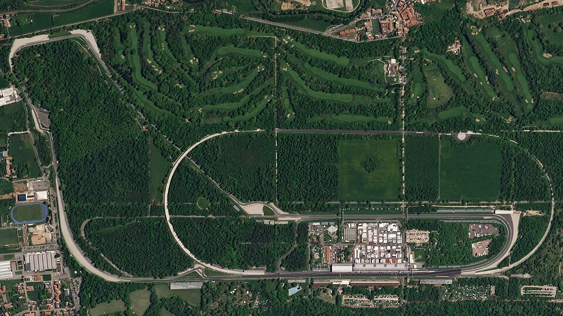
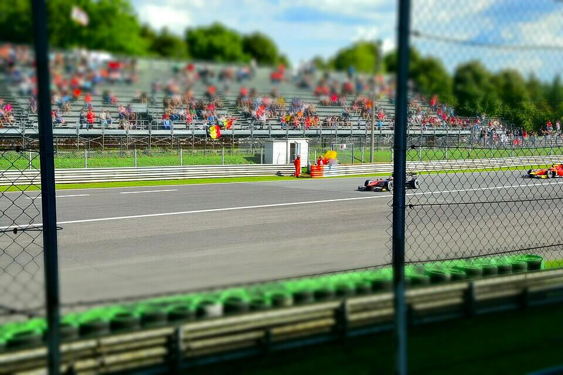

El trazado
Aqui podemos observar el famoso circuito de MONZA
El circuito visto desde arriba

Coches en carrera

Aqui podemos observar el famoso circuito de MONZA


| Dato | Valor |
|---|---|
| País | Italia |
| Año de inauguración | 1922 |
| Longitud del trazado | 5,793 km |
| Vueltas de la carrera | 53 |
| Número de curvas | 11 |